Meslekler
Herkes her şeyi yapabilir. Bir meslek, neyle başladığını, nerede başladığını ve neyi iki kat hızlı yaptığını belirler.
İstasyon Mühendisi'ne yeni misin? Mühendis rehberi istasyon istasyon ilerler: Heron, Millrace ve Cairn.
 İstasyon Şefi
İstasyon Şefi Sicil Memuru
Sicil Memuru Nöbet Görevlisi
Nöbet Görevlisi Avukat
Avukat İstasyon Mühendisi
İstasyon Mühendisi- Doktor
 Bilim İnsanı
Bilim İnsanı Ambar Görevlisi
Ambar Görevlisi Botanikçi
Botanikçi- Şef
 Barmen
Barmen Madenci
Madenci Bakım Görevlisi
Bakım Görevlisi Manevi Danışman
Manevi Danışman Tayfa
Tayfa
İstasyon Şefi 
İstasyon Şefi, vardiyayı Köprüüstü'nden yönetir. Kimlik kartı her kapıyı açar.
Şunlarla başlarsın
- Ellerinde: hiçbir şey
- Sırt çantası:
 Sırt çantası içinde Daimi Talimatlar
Sırt çantası içinde Daimi Talimatlar - Ayaklar:
 Süslü ayakkabılar yerçekimi olan bir istasyonda (Millrace, Cairn); ağırlıksız Heron'da çıplak ayak ya da çorap.
Süslü ayakkabılar yerçekimi olan bir istasyonda (Millrace, Cairn); ağırlıksız Heron'da çıplak ayak ya da çorap. - Ceplerinde:
 El feneri
El feneri 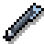
Kalem
Erişim
Kart erişimi: tüm alanlar. Başladığı yer: İstasyon Şefi'nin Odası. Kimlik kartı şunları açar: Botanik (botanik), Köprüüstü (komuta), İstasyon Şefi'nin Odası (komuta), Sicil Memuru'nun Odası (komuta), Sicil Memuru'nun Kamarası (komuta), Revir (sağlık), Ameliyathane (sağlık), Kimya (sağlık), Araştırma ve Geliştirme (bilim), Robotik (bilim), Genetik (bilim), Nöbet Bürosu (nöbet), Nezarethane (nöbet), Ambar Tezgâhı (ambar), Ambar Bölmesi (ambar), Maden Rıhtımı (ambar), Bakım Deposu (bakım), Hava Tesisi (mühendislik), Makine Atölyesi (mühendislik), Elektrik Atölyesi (mühendislik), İnşaat Atölyesi (mühendislik), Pil Odası (mühendislik), İnvertör Odası (mühendislik), Trafo Odası (mühendislik), Güneş Paneli Kontrolü (mühendislik), EVA Hava Kilidi (mühendislik), Hücre 1 (nöbet), Mutfak (mutfak), Morg (sağlık), EVA Hava Kilidi 2 (bakım), EVA Kapsülü (mühendislik), Yüksek Gerilim Kulübesi (mühendislik), İstasyon Şefi'nin Kamarası (komuta), İstasyon Şefi'nin Lavabosu (komuta), Toksin Laboratuvarı (bilim), servis geçitleri ve her herkese açık oda.
Ne yaparsın
- İstasyonu Köprüüstü'nün ekranlarından izle ve en önemli olana karar ver.
- Sınıf 3 bir suç için cezayı seç ve Sicil Memuru'nun raporlarını dinle.
- Tüm alanlar kartıyla hücreleri kilitle ve aç, istasyonun kameralarını izle.
- Vardiyanın bitmesi gerektiğinde mekiği çağır (önce ekip oy verir); vardiya biraz sürdükten sonra bir emirle erken de çağırabilirsin.
- Alarm seviyesini (Durgun, Dalgalı ya da Fırtına) Köprüüstü'nün taktik masasında ayarla: Nöbetin kartlarının neyi açtığını ve silah dolabını kimin açtığını değiştirir.
- Emirleri aynı listeden ver: Nezarethane kilitle, alarmda silah dolabını aç, mekiği erken çağır ve Cairn'de tüm Hava Kilitlerini kapat (buza açılan kapıları yalnızca senin kartın açar). Her birinin bir bekleme süresi vardır.
Birlikte çalıştığı
Sicil Memuru (sağ kol), Nöbet ve Avukat.
İpuçları
- Karar vermeden önce telsizden sor: tüm istasyonu sen görürsün, ama sorunu başkaları görür.
- Tüm alanlar kartıyla ortadan kaybolma: kaybolan kartlar kaybolmuş kalır.


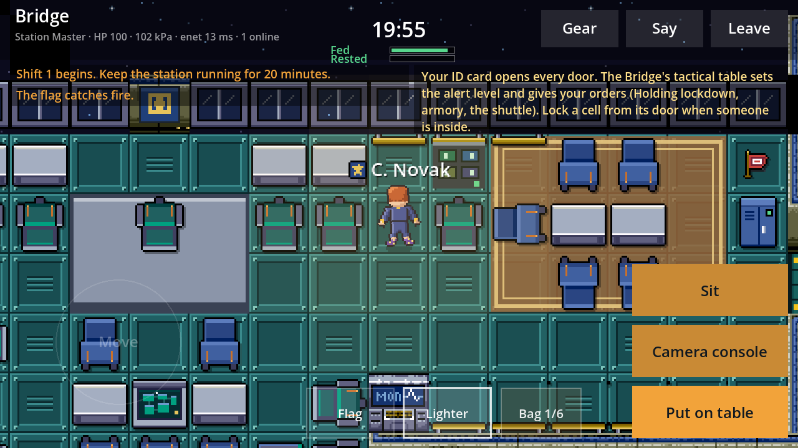

Sicil Memuru 
Sicil Memuru, ekibin kartlarına ve mesleklerine bakar. Ofisleri ve Köprüüstü'nü düzenli tutar.
Şunlarla başlarsın
- Ellerinde: hiçbir şey
- Sırt çantası: Sırt çantası içinde
 İstasyon Yasası
İstasyon Yasası - Ayaklar: Süslü ayakkabılar yerçekimi olan bir istasyonda (Millrace, Cairn); ağırlıksız Heron'da çıplak ayak ya da çorap.
- Ceplerinde: El feneri Kalem
Erişim
Kart erişimi: komuta. Başladığı yer: Sicil Memuru'nun Odası. Kimlik kartı şunları açar: Köprüüstü (komuta), İstasyon Şefi'nin Odası (komuta), Sicil Memuru'nun Odası (komuta), Sicil Memuru'nun Kamarası (komuta), İstasyon Şefi'nin Kamarası (komuta), İstasyon Şefi'nin Lavabosu (komuta) ve her herkese açık oda.
Ne yaparsın
- Kimlik konsolunu kullan: bir kart tak ve ona başka bir mesleğin adını ve erişimini ver (asla komuta mesleği değil), mesleğin boş bir yeri olduğu sürece.
- Her değişikliğin bastırdığı görev fişini mühürle ve dosyala: masanın kâğıt kaydıdır.
- Sicil Memuru'nun masasının penceresine hizmet ver ve kepenkini yukarı ya da aşağı kaldır.
- Kaybolanlara yardım et: kartı olmayan biri bir kapıyı açamaz.
- Nöbet istediğinde komuta kartıyla bir hücreyi kilitle.
- İstasyonun kameralarını Köprüüstü'nün kamera konsolundan izle.
Birlikte çalıştığı
İstasyon Şefi, Avukat ve masadaki tüm ekip.
İpuçları
- Her kart değişikliği kaydedilir ve sahibine bildirilir; nedenini telsizden söyle.
- Doğru erişimi ver, fazlasını değil: Mühendislik ve Sağlık kapıları tehlikeli şeyleri korur.


Nöbet Görevlisi
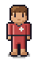
Nöbet Görevlisi, huzuru korur ve Nezarethane yönetir. Nöbet kemeri bir tazer, bir cop, bir biber spreyi, kelepçe ve bir fener taşır; Nöbet yeleği ve kaskıyla başlarsın (birlikte ezilme hasarında yüzde 25 azalma ve sersemlemede yüzde 30 kısalma; yedekleri silah dolabındadır) ve işe yarayan en az güçle kullanılır: İstasyon Yasası ve prosedürler ne zaman olduğunu söyler.
Şunlarla başlarsın
- Ellerinde: hiçbir şey
- Kemer:
 Nöbet kemeri içinde
Nöbet kemeri içinde  Tazer
Tazer  Cop
Cop  Biber gazı
Biber gazı  Kelepçe Kelepçe El feneri
Kelepçe Kelepçe El feneri - Sırt çantası: Sırt çantası
- Giydikleri:
 Nöbet yeleği
Nöbet yeleği  Nöbet kaskı
Nöbet kaskı - Ayaklar:
 Çizmeler yerçekimi olan bir istasyonda (Millrace, Cairn); ağırlıksız Heron'da çıplak ayak ya da çorap.
Çizmeler yerçekimi olan bir istasyonda (Millrace, Cairn); ağırlıksız Heron'da çıplak ayak ya da çorap. - Ceplerinde: Kalem
Erişim
Kart erişimi: nöbet. Başladığı yer: Nöbet Bürosu. Kimlik kartı şunları açar: Nöbet Bürosu (nöbet), Nezarethane (nöbet), Hücre 1 (nöbet) ve her herkese açık oda.
Ne yaparsın
- Koridorlarda devriye gez ve yardım çağrılarına cevap ver; Nöbet Bürosu'ndaki kamera konsolu kimin nerede olduğunu gösterir.
- Bir tehlikeyi uzaktan tazerle, yakından biber spreyiyle durdur; cop yalnızca bir saldırıya karşı kullanılır, kelepçeli ya da yerdeki birine asla.
- Kıpırdamadan duran birini kelepçele, sonra onu Nezarethane'ye çek.
- Hücre kapısı panelinden bir ceza seç (İstasyon Yasası'na bak), eşyalarını al ve kişi hastalanırsa ya da hücre havasını kaybederse hücreyi erken aç.
- Her gözaltını yaz.
- Alarm seviyesine göre devriye gez: Durgun'da tek başına, Dalgalı'da ikişer kişi ve kimlik sorarak, Fırtına'da Nöbet Bürosu'nda ve tehlikeli bölgede (Cairn'de: avluda ve Hava Kilidi yollarında, Fırtına'da fırtına sığınağında). Silah dolabı, Dalgalı ve Fırtına'da kartınla açılır.
Birlikte çalıştığı
İstasyon Şefi, Avukat ve Doktor.
İpuçları
- Birini durdurmadan önce nedenini tek cümleyle söyle.
- Yasa ve Daimi Talimatlar sayfalarını bir kez oku: cezalar bir tablodadır.


Avukat 
Avukat, yasaya uyulmasını sağlar. Her kartın açtığı Savunma Odası'nda çalışır.
Şunlarla başlarsın
- Ellerinde: hiçbir şey
- Sırt çantası: Sırt çantası içinde İstasyon Yasası Daimi Talimatlar
- Ayaklar: Süslü ayakkabılar yerçekimi olan bir istasyonda (Millrace, Cairn); ağırlıksız Heron'da çıplak ayak ya da çorap.
- Ceplerinde: Kalem
Erişim
Kart erişimi: nezarethane ziyareti. Başladığı yer: Savunma Odası. Kimlik kartı şunları açar: Nöbet Bürosu (nöbet), Nezarethane (nöbet), Hücre 1 (nöbet) ve her herkese açık oda.
Ne yaparsın
- Her iki kural kitabını da oku (birini tut ve Oku'ya dokun).
- Gözaltındaki kişiyi, görevliyi ve tanıkları dinle.
- Bir suçlamanın geçerli mi, hafifletilmiş mi, düşürülmüş mü olduğunu söyle.
- Nöbet ile İstasyon Şefi'ne yasanın ne dediğini söyle.
Birlikte çalıştığı
Nöbet, İstasyon Şefi ve Sicil Memuru.
İpuçları
- Bir Avukat, hücre kapısını açamaz: ikna et, emretme.
- İyi niyetle verilmiş bir dilekçe asla suç sayılmaz.
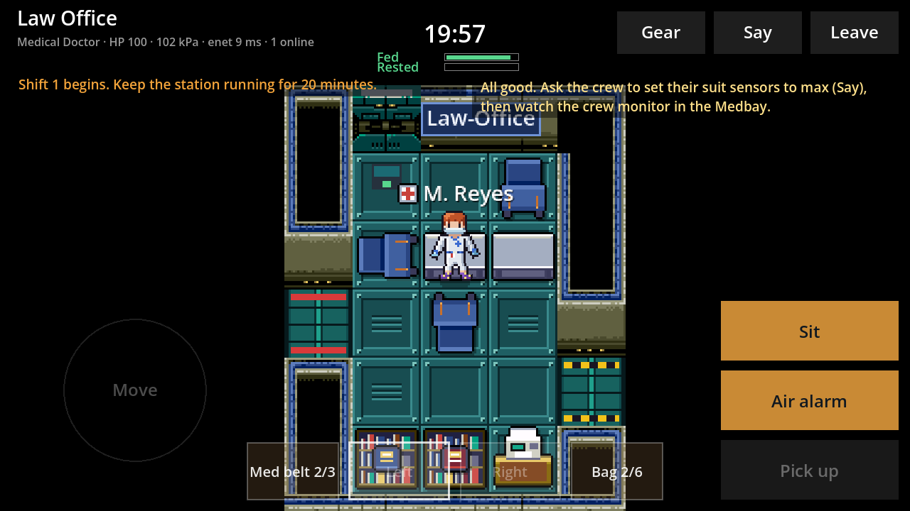
İstasyon Mühendisi 
İstasyon Mühendisi elektriği açık, gövdeyi kapalı tutar. İstasyon onsuz kararır.
Şunlarla başlarsın
- Ellerinde: hiçbir şey
- Kemer:
 Alet kemeri içinde
Alet kemeri içinde 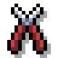
Tel kesici Kaynak makinesi
Kaynak makinesi  Kablo makarası
Kablo makarası  Tornavida
Tornavida 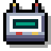
Çok amaçlı alet Levye
Levye  T-ışını tarayıcısı
T-ışını tarayıcısı  İngiliz anahtarı
İngiliz anahtarı - Sırt çantası: Sırt çantası içinde
 Hava tankı
Hava tankı - Giydikleri:
 Uyarı yeleği
Uyarı yeleği  Yalıtımlı eldiven
Yalıtımlı eldiven  Kaynak gözlüğü
Kaynak gözlüğü  Baret
Baret - Ayaklar: Çizmeler yerçekimi olan bir istasyonda (Millrace, Cairn); ağırlıksız Heron'da çıplak ayak ya da çorap.
Erişim
Kart erişimi: mühendislik, bakım. Başladığı yer: Makine Atölyesi. Kimlik kartı şunları açar: Bakım Deposu (bakım), Hava Tesisi (mühendislik), Makine Atölyesi (mühendislik), Elektrik Atölyesi (mühendislik), İnşaat Atölyesi (mühendislik), Pil Odası (mühendislik), İnvertör Odası (mühendislik), Trafo Odası (mühendislik), Güneş Paneli Kontrolü (mühendislik), EVA Hava Kilidi (mühendislik), EVA Hava Kilidi 2 (bakım), EVA Kapsülü (mühendislik), Yüksek Gerilim Kulübesi (mühendislik), servis geçitleri ve her herkese açık oda.
Ne yaparsın
- Gövde yırtıklarını yamala, yıpranmış ya da çatlak duvarları açılmadan güçlendir.
- Kesik bir kablodaki boşluğu bul ve üstüne kablo döşe.
- Güneş parçalarını temizlemek, sıkmak ve değiştirmek için EVA kıyafetiyle kafes kirişte yürü. Millrace'te dalış giysisi ve tüp seni su basmış odalara ve deniz tabanındaki rotor sahalarına götürür.
- Şarj denetleyicilerini sıfırla, bozulan pil hücrelerini ve invertör modüllerini değiştir.
- Torna tezgâhında yedek parça yap; sargısı gittiğinde trafoyu yeniden sar.
- EVA tüplerini Hava Tesisi'ndeki manifoldda doldur (hortumu anahtarla tak); bir depo azalınca Ambar'ın gaz tüplerini porta anahtarla tak; arızalı parçaları hurda presinde plakaya bastır.
- İki kat hızlı: gövde yırtığını yamala, bir kapının panelini aç ya da kapat, bir zemin karosunu kaldır, bir gövde duvarının kaplamasını sök, bir boruyu anahtarla gevşet ya da sık, bir boru döşe, bir boru kes ve yıpranmış bir gövde duvarını güçlendir.
Birlikte çalıştığı
Ambar Görevlisi (plakalar ve parçalar), Bakım Görevlisi (tüneller) ve Nöbet (kırılan kapılar).
İpuçları
- Her turda dış duvarlara bak: bir leke ucuza onarılır, delik değil.
- Trafoya dokunmadan önce her sigortaya bir kilit etiketi as.
Mühendis rehberi: harita harita
Üç istasyon, üç enerji santrali. Hiçbirinde bir şey duyurulmaz: önce konsolları oku, sonra onar. Yedek parçalar, Makine Atölyesi'ndeki torna tezgâhında plakalardan yapılır. Her adımın arkasındaki kurallar Nasıl oynanır sayfasındadır.
Heron: güneş zinciri ve dışarıdaki yürüyüş
- Yürümeden önce oku. Güneş Paneli Kontrolü'nün üç konsolu dizileri, pil bankasını ve invertörleri gösterir. Bir parça önce ısınır, sonra daha az verir ve ancak ondan sonra bozulur; bu yüzden dolaplardaki kehribar ve kırmızı ışıklar iş listendir.
- Gece yörüngenin parçasıdır. İstasyon her 8 dakikada bir dönüş yapar ve son 2 dakikasını gölgede geçirir; o sırada her şeyi pil bankası taşır. Karanlıktan hemen önce şebekeyi indirecek bir işe başlama.
- Önce içeride. Atmış bir şarj denetleyicisinin nedeni giderilmeli (menfezler için tornavida, uçlar için anahtar), sonra çoklu aletle sıfırlanmalı. Bozulan bir pil hücresini ya da invertör modülünü torna tezgâhından bir yedekle değiştir.
- Dışarı çıkış. EVA kıyafetini ve kaskı tak, kıyafetin deposunda bir hava tüpü bulundur, bir EVA hava kilidine gir ve kapısının yanındaki düğmeye bas. Emniyet halatı asla kopmaz, bu yüzden tüm kafes kirişte yürü; tek sınır tüpteki havadır.
- Kafes kirişte. Tozlu bir paneli sıyırıcı temizler, çatlak bir paneli torna tezgâhından yeni bir güneş paneli değiştirir, güneşi geriden izleyen bir diziyi anahtar sıkar ve yıpranmış bir izleme eklemini gres açar (takılmış olanda önce cıvataları sık).
- İçeri dönüş. Aynı düğme odayı havayla doldurur ve halatı çıkarır; dışarıda hâlâ biri varken bunu yapmaz. Bir sonraki sefer öncesi tüpü iki hava kilidinden birinin dolum noktasında doldur.
- Trafo. Biri çekirdeğine dokunmadan önce: her sigortayı aç, her birine bir kilit etiketi as, trafonun ölü olduğunu çoklu aletle sına ve topraklama çubuğunu tak. Bu yapılmadan vinç çekirdeği oynatmaz.
Millrace: türbinler ve dalış
- Saati gelgit belirler. Güç deniz tabanı türbinlerinden gelir ve gelgit her 8 dakikada döner: durgun su, bir dalga, durgun su, bir dalga. Durgun suda pil bankası istasyonu taşır; bu yüzden birinden önce bankanın azalmasına izin verme.
- Turbine Control'ü oku. Üç konsolu her rotor sahasını, bankayı ve invertörleri gösterir. Bir akım dalgalanması, kirlenmiş bir saha ya da atmış bir dönüştürücü ilk orada görünür.
- Deniz tabanında dört şey yıpranır. Deniz canlıları (rotor fırçası), bir yatak (yeni yatak), bir conta (yeni conta, sonra dönüştürücüyü sıfırla) ve bir sahanın kablosu (kablo makarası). Fırça, yatak ve conta torna tezgâhında plakalardan yapılır.
- Dalış. Omurga'daki Dalış Havuzu'ndan bir dalış giysisi al ve deposuna bir hava tüpü koy. Suyun başında dur ve Havuza dal'a dokun: dalış hattıyla deniz tabanında çıkarsın; hat asla kopmaz. Işıklı halkada yukarı dönmek için Havuza tırman'a dokun.
- Çift çalışın. Deniz tabanında bir dalgıç, konsollarda bir mühendis: dalgıç fırçalar ve yeniden contalar, mühendis dönüştürücüyü sıfırlar.
- Deniz içeri girerken. Bir gövde sızıntısı ya da bir basınç yırtılması odaları su basar, en derin güverteden başlayarak. Her çatlak duvarı bir gövde plakası ve kaynak makinesiyle yamala, sonra odayı hava alarmından Tahliye konumuna al; bir anahtar sıkışmış sintine pompasını açar.
- Trafoda kilitleme, Heron'dakiyle aynıdır.
Cairn: ısıtma ve elektrik
- Dört kaynak. Dört rüzgâr direği, bir jeotermal kuyu, yedek olarak bir dizel jeneratör ve pil bankası. Güç Kontrol'deki güç konsolu şu anki rüzgârı ve sonraki dakikaların ne getireceğini gösterir.
- Kırağı ve kabuk. Kırağı bütün vardiya boyunca kanatlarda birikir: parkayla direğin yanında buzda dur ve elle kır. Jeotermal ısı değiştirici bir mineral kabuğu bağlar: onu kuyu başında yıka.
- Jeneratör. Yakıt varillerini Jeneratör Barakası'ndaki tankına boşalt (onları tedarik konsolundan sipariş et). Otomatikte banka azalınca çalışır; tank boşken ya da baraka çok soğukken çalışmaz.
- Isı tek bir döngüdür. Isı Kontrol'deki kazan glikolü ısıtır; pompa onu kırmızı besleme borusundan radyatörlere sürer ve mavi dönüş borusundan geri getirir. Döngüyü atmos konsolunun Isı sekmesinden oku.
- Karartmadan sonra önce kazanı geri getir ve ondan dışarıya doğru çöz. Pompayı Düşük'e al: Orta ya da Yüksek'te donmuş boruya basar ve onu patlatır. Isı tabancası donmuş bir boruyu hızla çözer; patlamış bir boru için torna tezgâhından yeni bir tane gerekir ve anahtarla takılır.
- Kapılara dikkat. Hava Kilidi'nin bir kapısı açıkken diğerini kapalı tut ve avludaki her iş için dış mekân kıyafetini (parka, bere, sıcak eldiven, bot) giy.
- Güç Kontrol'deki trafoda kilitleme, Heron'dakiyle aynıdır.


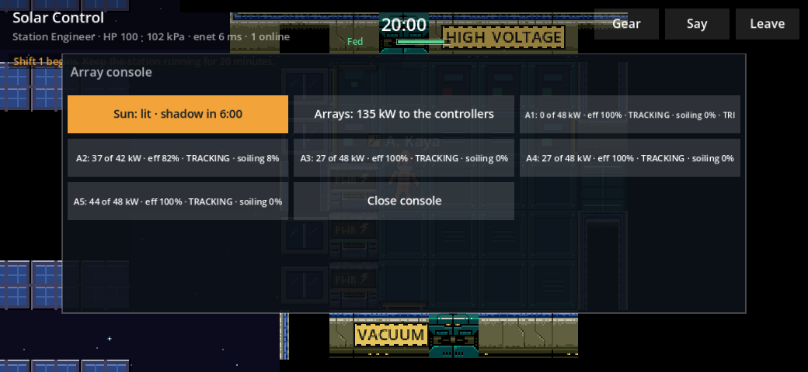


Doktor 
Doktor ekibi hayatta tutar. Düşen herkes zamanında tedavi edilmeli; ölüler kısa bir süre canlandırılabilir.
Şunlarla başlarsın
- Ellerinde: hiçbir şey
- Kemer:
 Tıp kemeri içinde
Tıp kemeri içinde 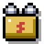
Defibrilatör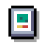
Sağlık analizörü - Sırt çantası: Sırt çantası içinde
 İlk yardım çantası Hava tankı
İlk yardım çantası Hava tankı - Giydikleri:
 Laboratuvar önlüğü
Laboratuvar önlüğü  Lateks eldiven
Lateks eldiven  Steril maske
Steril maske  Steteskop
Steteskop - Ayaklar:
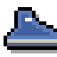
Ayakkabılar yerçekimi olan bir istasyonda (Millrace, Cairn); ağırlıksız Heron'da çıplak ayak ya da çorap.
Erişim
Kart erişimi: sağlık. Başladığı yer: Revir. Kimlik kartı şunları açar: Revir (sağlık), Ameliyathane (sağlık), Kimya (sağlık), Morg (sağlık) ve her herkese açık oda.
Ne yaparsın
- Sağlık analizörüyle insanları tara ve ilk yardım çantasıyla tedavi et.
- Canlandırma süresi içinde defibrilatörle birini canlandır.
- Kimin yaralı olduğunu ve nerede olduğunu görmek için ekip monitörünü oku.
- Nezleyi ve gribi nezle ilacıyla tedavi et; Ameliyathane'de ve Morg'da çalış.
- İki kat hızlı: birini tedavi et, birini canlandır ve birini dinle.
Birlikte çalıştığı
Nöbet (gözaltındakiler), İstasyon Şefi ve yaralanan herkes.
İpuçları
- İnsanlardan kıyafet sensörlerini Yaşam belirtileri ya da daha fazlasına ayarlamalarını iste.
- Yanında bir hava tüpü taşı: insanlar, yırtılmış bir odada düşer.
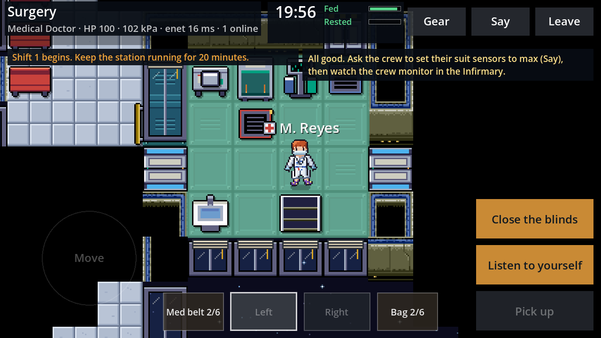

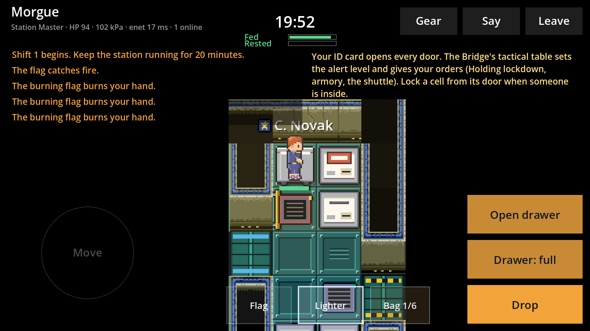
Bilim İnsanı
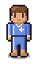
Bilim İnsanı, istasyonun araştırmasını diğer Bilim İnsanlarıyla yürütür (dört laboratuvarda projeler, deneyler ve Hakemin incelemeleri) ve ayrıca Robotik odasında istasyonun dört tür robotunu yapar ve onarır: araştırma ve robotik için tek meslek. Kimse bir tezgâha bağlı değildir.
Şunlarla başlarsın
- Ellerinde: hiçbir şey
- Kemer: Alet kemeri içinde Çok amaçlı alet İngiliz anahtarı
- Sırt çantası: Sırt çantası içinde Tornavida
 Gövde plakası Gövde plakası Gövde plakası
Gövde plakası Gövde plakası Gövde plakası - Giydikleri: Laboratuvar önlüğü Lateks eldiven Steril maske
- Ayaklar: Ayakkabılar yerçekimi olan bir istasyonda (Millrace, Cairn); ağırlıksız Heron'da çıplak ayak ya da çorap.
- Ceplerinde: Kalem
Erişim
Kart erişimi: bilim. Başladığı yer: Araştırma ve Geliştirme. Kimlik kartı şunları açar: Araştırma ve Geliştirme (bilim), Robotik (bilim), Genetik (bilim), Toksin Laboratuvarı (bilim) ve her herkese açık oda.
Ne yaparsın
- Ar-Ge konsolunda, başka bir mesleğin verdiği bir ihtiyaçtan ya da listeden bir proje başlat ve planla: bir yöntem ve güvenlik önlemleri.
- Bir numune getir ya da iste (bir ürün, cevher, bir reaktif); sonra deneyi tezgâhta, Toksin Laboratuvarı'nın kabında ya da kültür odasında yap; veri çizelgelerini konsola ver ve çözümle (30 sn). Bir literatür taraması (45 sn) bir deneyi ya da numuneyi kurtarabilir. Millrace'te Toksin Laboratuvarı, Rıhtım güvertesinde Ar-Ge'nin patlama kapısının ardındaki Toksin Bölmesi'dir; kendi gaz tüpleri vardır ve Ar-Ge'deki bir depo dolabı ilk projeler için bakır, plaka ve reaktif tutar.
- Bulguyu konsolda sun: Direktörlük İnceleme Kurulu'nun Hakemi bir dakika kadar içinde yanıtlar (kabul, tekrarı gereken küçük ya da büyük düzeltmeler, uyulacak ya da reddedilecek bir atıf isteği ya da ret). Etik dışı olarak işaretlenmiş bir projeyi, gerekirse geri çek. Sonra prototipi Robotik tezgâhında, tedarik konsolundan satın alınan plaka, bakır ve reaktiflerle yap.
- Prototipi saha denemesini isteyen bölüme ver; ilk kullanımları bir Deneme raporu yazar. Elindeki raporu konsolda teslim ederek projeyi yayımla: puanlar ödenir ve tezgâh eşyayı vardiya boyunca yapar.
- Servis taleplerini yanıtla: bir cevher analizi (daha zengin ergitme), bir malzeme testi (en ince duvarlar), bir numune teşhisi (daha hızlı ilaçlar), bir ürün denemesi (daha iyi bir ürün).
- Robotik: sırt çantandaki gövde plakalarından robot üreticide bir sağlık, inşaat, elektrikçi ya da nöbet robotu yap (robot yalnızca Bilim İnsanı yapabilir; iş senin için yarı sürede biter), pili biten bir robotu tornavidayla düzelt ve Robotik raflarından, Ambar'dan ve Madenci'den plaka akışını sürdür.
Birlikte çalıştığı
Her meslek: Botanikçi, Madenci ve Kimya numune getirir; Mühendis ile Doktor proje ister; Nöbet, İstasyon Mühendisi ve Doktor robotlarla karşılaşır.
İpuçları
- Araştırma bütçesine dikkat et: Direktörlük vardiya başında istasyona yaklaşık yüz puan verir, bir proje başlatmak bedelini harcar (küçük için 10 ila 15, büyük için 30 ila 40), iyi bir yayın daha fazlasını geri öder ve puan kalmayınca yeni proje başlamaz. Havuz ayrıca Ambar'dan nadir numuneler satın alır (bir analiz bakır çubuğu, bir reaktif seti, bir deniz ya da buz numunesi); bunlar veriyi iyileştirir; Ambar Görevlisi onaylar ve tedarik puanları Ambar Görevlisi'nin kendisinde kalır.
- Bir robot insandan yavaştır ve bir deliği ya da kabloyu onarmadan önce yarım dakika bekler: acil işi kendin yap ve kırmızı gözlü olanlara bak.
- Güvenlik önlemlerine dikkat et: hiçbiri olmayan plan kaza ihtimalini iki katına çıkarır.
- Yırtılmış bir kap, iki kare içindeki herkese zarar verir: uzak dur ve patlama kapısını kapat.
- Tek başına İstasyon Şefi'nin mührü yarı değer taşır.
- Hedef, vardiya başına yaklaşık bir yayındır: başarısız bir deneme projeyi notlarla planına geri gönderir ve sonraki denemeler biraz daha iyi geçer.
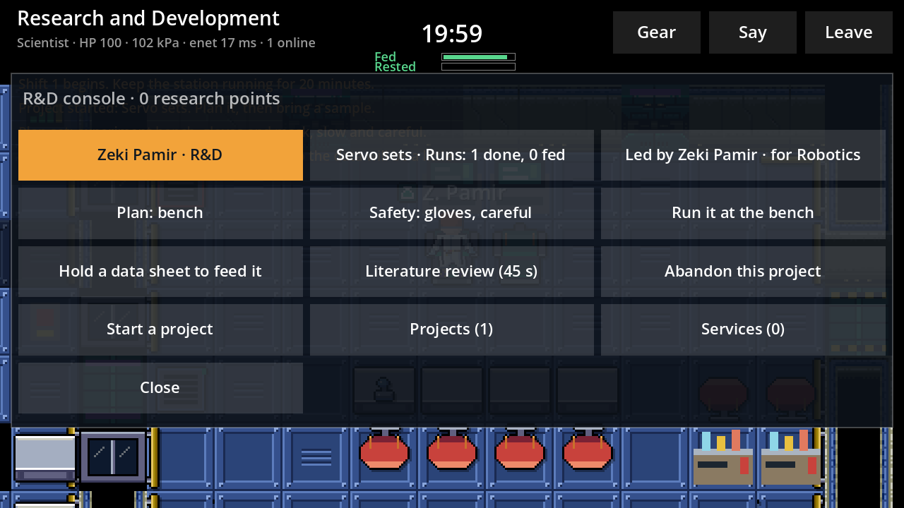
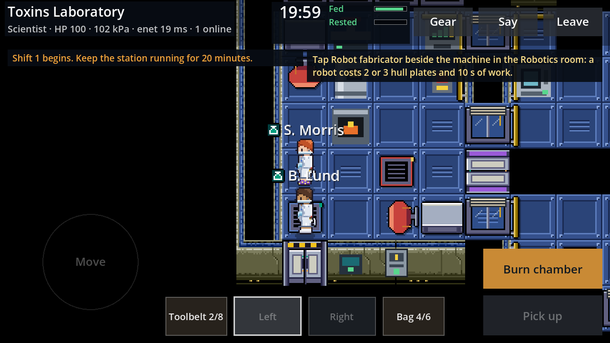
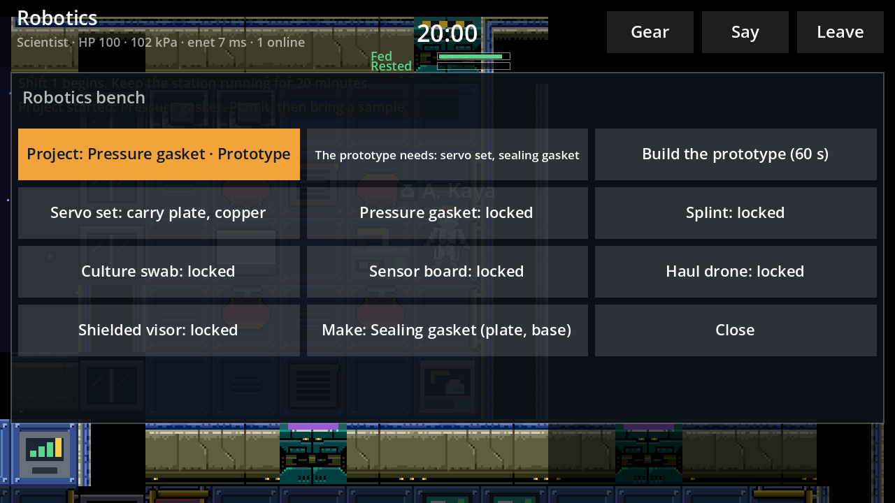
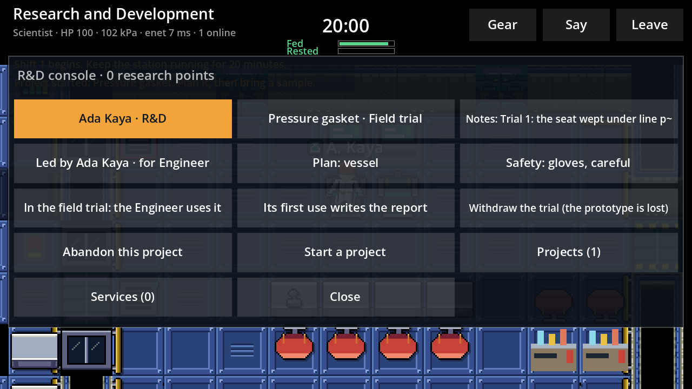


Ambar Görevlisi 
Ambar Görevlisi, tedariki ve yükleri yönetir. Siparişleri onaylar ve teslimat platformunu yükler.
Şunlarla başlarsın
- Ellerinde: hiçbir şey
- Sırt çantası: Sırt çantası içinde Levye
 Ambar mührü
Ambar mührü - Ayaklar: Çizmeler yerçekimi olan bir istasyonda (Millrace, Cairn); ağırlıksız Heron'da çıplak ayak ya da çorap.
- Ceplerinde: Kalem
Erişim
Kart erişimi: ambar. Başladığı yer: Ambar Tezgâhı. Kimlik kartı şunları açar: Ambar Tezgâhı (ambar), Ambar Bölmesi (ambar), Maden Rıhtımı (ambar) ve her herkese açık oda.
Ne yaparsın
- Sipariş konsolunda tedarik isteklerini onayla ya da reddet: onaylanan siparişler platforma iner.
- Sipariş formlarını mühürle ve puan için dosya dolabına dosyala.
- Puan kazanmak için platformdaki malları sevk et.
- Kapıları bir levyeyle herkesten daha hızlı zorla aç.
- Cairn'de: donmuş erzak sipariş et (yalıtımlı bir sandıkta gelir), Tedarik Kabul'deki soğuk zincir defterini oku, Soğuk Kiler'deki termometre panosuna bak ve tedarik uçuşunun sandığını erimeden avlu platformundan Ambar'a kızakla taşı (altı sandık).
- İki kat hızlı: bir kapıyı zorla aç, bir tedarik siparişi onayla ve bir tedarik talebini reddet.
- Onayladığın siparişler 20 sn yerine 40 sn'de iner.
Birlikte çalıştığı
İstasyon Mühendisi (plakalar, parçalar, gübre), Madenci ve Botanikçi.
İpuçları
- Puanlar ortaktır: onları istasyonun şu an ihtiyaç duyduğu şeye harca.
- Telsizi yanıtla: bir istek, biri bakana kadar bekler.


Botanikçi
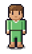
Botanikçi, ekibin yiyeceğini serada yetiştirir. Eker, sular, ot yolar, hasat eder ve ürünü mutfağa gönderir.
Şunlarla başlarsın
- Ellerinde: hiçbir şey
- Kemer:
 Tohum kesesi içinde
Tohum kesesi içinde  Buğday tohumu
Buğday tohumu 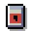
Domates tohumu Fasulye tohumu
Fasulye tohumu  Patates tohumu
Patates tohumu  Pirinç tohumu
Pirinç tohumu  Mısır tohumu
Mısır tohumu 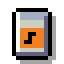
Havuç tohumu Soğan tohumu
Soğan tohumu - Sırt çantası: Sırt çantası içinde
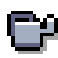
Sulama kabı (boş) - Ayaklar: Ayakkabılar yerçekimi olan bir istasyonda (Millrace, Cairn); ağırlıksız Heron'da çıplak ayak ya da çorap.
Erişim
Kart erişimi: botanik. Başladığı yer: Botanik. Kimlik kartı şunları açar: Botanik (botanik) ve her herkese açık oda.
Ne yaparsın
- Tohum kesesinden her tepsiye bir tohum ek.
- Tepsileri sula, gübrele ve otlarını yol; hasta bitkileri spreyle tedavi et.
- Olgun bitkileri hasat et ve ürünü geçiş dolabına bırak.
- Saate göz at: her ürün kendi zamanında olgunlaşır.
- İki kat hızlı: tohum ek, bir bitki hasat et, tepsiyi sula, bir sulama kabı doldur, bir tepsiyi gübrele, bir tepsinin otlarını yol, hasta bir bitkiyi tedavi et ve kompost kutusunu kullan.
Birlikte çalıştığı
Şef (dolap), Ambar Görevlisi (gübre, spreyler, tohumlar) ve Barmen (meyve).
İpuçları
- Bakım işi Botanikçi'nin yarı zamanını alır: turlarını erken yap.
- Tepsiyi tek dokunuşla kontrol et: su, besin, yabani otlar ve hastalığı söyler.
Ürünler
Sera (Botanik, her yanı cam) ekim tepsileri, bir lavabo, bir kompost kutusu ve 11 ürünün hepsinden tohum rafları içerir. Botanikçi bir tohum eker (2 saniye), bitki ürüne göre 2 ila 6 dakikada olgunlaşır ve bir hasat (3 saniye) ürününü (1 ila 3, iyi bakılınca daha çok) ve tohumu geri verir. Birkaç tepsi vardiyaya zaten büyürken başlar, böylece ilk hasat bir dakikada gelir. Tepsi bakımının kendi kuralları vardır: Botanik sayfasına bak.
Tohum kesesi, ilk gruptaki her üründen birer tohum taşır; ikinci grubun tohumları sera raflarında durur ve Ambar her üründen bir tohum satar.
| Ürün | Grup | Olgunlaşma süresi | Dakikada su | Dakikada besin | Ürün | Girdiği yemekler |
|---|---|---|---|---|---|---|
| Buğday | 1 | 150 saniye | 20 | 12 | 2 | Pide, Malt çayı |
| Domates | 1 | 3 dakika | 24 | 16 | 2 | Domatesli pilav, Fasulye yahnisi, Domates çorbası, Domates gazozu |
| Fasulye | 1 | 210 saniye | 14 | 6 | 2 | Proteinli tava yemeği, Pilav kasesi, Fasulye yahnisi |
| Patates | 1 | 3 dakika | 16 | 16 | 3 | Hasat karışımı, Sebze güveci, Mısır çorbası, Patates çorbası, Patates kızartması, Fırın patates |
| Pirinç | 1 | 4 dakika | 30 | 14 | 2 | Domatesli pilav, Pilav kasesi |
| Mısır | 1 | 270 saniye | 20 | 22 | 2 | Mısır çorbası |
| Havuç | 1 | 150 saniye | 14 | 10 | 3 | Sebze yahnisi, Havuç salatası |
| Soğan | 1 | 3 dakika | 12 | 10 | 2 | Hasat karışımı, Sebze güveci, Mısır çorbası, Mantar tavası, Patates çorbası, Soğan suyu |
| Elma | 2 | 6 dakika | 10 | 14 | 3 | Meyve kompostosu |
| Mantar | 2 | 2 dakika | 12 | 8 | 1 | Mantar sote |
| Şeker pancarı | 2 | 4 dakika | 14 | 12 | 2 | Pancar şekeri |
Bitki bakımı
- Her dikim tepsisi kendi durumunu tutar: su (0 ile 100), besin (0 ile 100), otlar (0 ile 3) ve bir hastalık işareti (yanıklık ya da yaprak biti). Bir tepsiye dokun (Tepsiyi kontrol et): 'Su 60 · Besin 40 · Ot 1 · Sağlıklı' tek satırını ve elindekine uyan düğmeleri gösterir. Erişimdeki herkes bakabilir: bir tepsinin durumu sır değildir.
- Bitki büyürken su durmadan düşer (her ürünün kendi susuzluğu vardır) ve suyu bitmiş bir bitki büyümeyi bırakır. Yalnızca 4 dakika susuz kalınca solar ve su onu geri getirir. Bir sulama kabını serada lavaboda doldur (Kabı doldur, 3 saniye): 4 sulama alır ve her Sula (3 saniye, Botanikçi için yarısı) 50 ekler.
- Bitki yedikçe besin düşer. 50 ya da daha fazlasıyla %25 daha hızlı büyür ve çoğu zaman beslenirse bir ürün daha verir; hiç yokken %30 daha yavaş büyür. Bir gübre çuvalı 5 kullanımlıktır (Gübrele, 4 saniye, 50 ekler); Ambar birini 3 tedarik puanına sipariş eder.
- Bir tepsiye yaklaşık her 2 dakikada ot gelir ve her biri bitkiyi %15 yavaşlatır. Ot ayıkla (4 saniye, elle) hepsini yolar; yerde ot olarak kalırlar. Seradaki kompost kutusu onları alır (Otları kompostla): her 6 tanesi bir kullanımlık gübre yapar; elindeki bir çuval onu geri alır (Gübre al).
- Bir hastalık (yanıklık ya da yaprak biti) nadirdir. Bitkiyi yüzde 40 yavaşlatır, tepside lekeler olarak görünür ve kendi hâline bırakılırsa 3 dakikada yanındaki sağlıklı bir tepsiye geçer. Bir bitki spreyi (4 kullanım, Tedavi et, 5 saniye) onu iyileştirir; Ambar birini 2 tedarik puanına sipariş eder.
- Bakım zaman alır, hasadı değil: toplam 90 saniye kuru, otlu, hasta ya da aç kalan bir bitki yine de ürününün yarısını verir ve hiçbir görevin yokluğu istasyonu aç bırakmaz. Ot ayıklama, sulama, gübreleme ve tedavi 3 ila 5 saniye sürer, Botanikçi için yarısı.
Ürünlerin girdiği yemekler Şef'in yemek listesindedir.


Şef 
Şef, mutfakta ekibin yemeğini pişirir. Şef olmadan erzak dağıtıcısı ekibi besler, ama cılız.
Şunlarla başlarsın
- Ellerinde: hiçbir şey
- Sırt çantası: Sırt çantası
- Giydikleri:
 Önlük
Önlük  Şef şapkası
Şef şapkası - Ayaklar: Ayakkabılar yerçekimi olan bir istasyonda (Millrace, Cairn); ağırlıksız Heron'da çıplak ayak ya da çorap.
Erişim
Kart erişimi: mutfak. Başladığı yer: Mutfak. Kimlik kartı şunları açar: Mutfak (mutfak) ve her herkese açık oda.
Ne yaparsın
- Ürünü geçiş dolabından al.
- Ocakta, eksikleri gösteren tek bir listeden bir yemek seç.
- Yemekleri servis tezgâhına koy: herkes ondan alabilir.
- Cairn'de: donmuş erzaktan erzak güveci pişir (çözülmüş bir erzak yalnızca sulu bir güveç, bozulmuş olan hiçbir şey yapmaz): soğuğa karşı en iyi sıcak yemek budur.
- İki kat hızlı: bir yemek pişir.
Birlikte çalıştığı
Botanikçi (ürün) ve tüm ekip (açlık).
İpuçları
- Önce en büyük yemekleri pişir: en çok doyuranlar onlar.
- Şapka ve önlük karakterinde görünür: yedekler dolapta.
Yemekler
Şef, ocakta pişirir ve eksik malzemeleri gösteren tek bir listeden bir yemek seçer. Bir yemek, açlık göstergesini gösterilen yüzde kadar doldurur. Barın içkileri ve karıştırıcının tarifleri Barmen'in içki listesindedir.
| Yapar | At | Malzemeler | Doyurur | Süre |
|---|---|---|---|---|
| Hasat karışımı | Ocak | protein bloğu, patates ve soğan | 65% | 12 s |
| Proteinli tava yemeği | Ocak | protein bloğu ve fasulye | 60% | 10 s |
| Sebze yahnisi | Ocak | havuç, patates ve soğan | 52% | 12 s |
| Mısır çorbası | Ocak | mısır koçanı, patates ve soğan | 56% | 11 s |
| Domatesli pilav | Ocak | pirinç ve domates | 47% | 9 s |
| Pilav kasesi | Ocak | pirinç ve fasulye | 45% | 9 s |
| Fasulye yahnisi | Ocak | fasulye ve domates | 42% | 8 s |
| Mantar sote | Ocak | mantar ve soğan | 38% | 8 s |
| Patates çorbası | Ocak | patates ve soğan | 40% | 8 s |
| Patates kızartması | Ocak | 2 patates | 38% | 7 s |
| Meyve kompostosu | Ocak | elma ve pancar şekeri | 34% | 8 s |
| Domates çorbası | Ocak | 2 domates | 33% | 7 s |
| Yassı ekmek | Ocak | 2 buğday | 30% | 6 s |
| Havuç salatası | Ocak | 2 havuç | 25% | 6 s |
| Soğan çorbası | Ocak | 2 soğan | 26% | 7 s |
| Fırın patates | Ocak | patates | 28% | 10 s |

Barmen 
Barmen barın içkilerini yapar ve servis eder. Birkaç dakikada birkaç sert içki içeni çakırkeyf yapar; hafif olanlar yemek ve rahatlıktır.
Şunlarla başlarsın
- Ellerinde: hiçbir şey
- Sırt çantası: Sırt çantası içinde
 Shaker
Shaker - Giydikleri:
 Barmen yeleği
Barmen yeleği - Ayaklar: Ayakkabılar yerçekimi olan bir istasyonda (Millrace, Cairn); ağırlıksız Heron'da çıplak ayak ya da çorap.
Erişim
Kart erişimi: bar. Başladığı yer: Bar. Kimlik kartı şunları açar: her herkese açık oda.
Ne yaparsın
- Şişeden ya da musluktan bardağa doldur, buz ekle, soda ya da tonikle tamamla.
- Bir elinde shaker, diğerinde bardakla bir içkiyi çalkala ya da sıcak olanı karıştırıcıda karıştır.
- Bardağı yanındakine ver ya da tezgâha bırak.
- Kullanılmış bardakları lavaboda yıka, buz kovasını doldur ve şişeleri raflardan ya da Ambar'dan yenile.
- Cairn'de: bir ocak kupası ya da ılık bir likör karıştır, ikisi de çekirdeği ısıtır; avludan buz blokları bardaklara ve kovaya girer.
- İki kat hızlı: bir içki karıştır, kokteyl çalkala, bardak yıka ve buz dondur.
Birlikte çalıştığı
Şef ve Botanikçi (malzemeler), Ambar Görevlisi (şişeler) ve tezgâhtaki ekip.
İpuçları
- Başka hiçbir şey bara bağlı değil: sakin zamanı başka yerde yardım etmek için kullan.
İçecekler ve kokteyller
- Her içecek hazırlayanın elindeki bardağa gider: masa gerekmez. İkram et, onu yanındaki boş eli olan birine verir; ya da tezgâha koy.
- Doldur: bir elde şişe, öbüründe boş bardak, sonra Doldur'a dokun. Bir şişede 6 ölçü vardır; boşalan yok olur, yedekleri barın raflarında durur ya da Ambar'dan sipariş edilir.
- Musluk: barın musluğunun yanında boş bir bardak tutup Musluktan doldur'a dokun. Musluk hiç tükenmez.
- Buz ekle: bir bardak ya da doldurulmuş içecek tutup Buz ekle'ye dokun; buz kovası öbür elinde ya da erişimde, ya da öbür elinde bir buz kalıbı olsun. Kova 6 kepçe alır; barın karıştırıcısı onu yeniden doldurur (8 saniye), buz kalıbı ise hemen.
- Uzun içecek: bir elde doldurulmuş içecek, öbüründe soda ya da tonik şişesi, sonra Doldur'a dokun.
- Çalkala: bir elde shaker, öbüründe temiz bardak, sonra Çalkala'ya dokunup 8 içecekten birini seç. Her biri taşıdığın ya da erişimde duran iki ya da üç şişeden birer ölçü alır (3 saniyelik iş, Barmen için yarısı).
- Karıştırıcı: malzemeleri barın karıştırıcısına koy ve elinde temiz bir bardakla Karıştır'a dokun; sıcak içecekler ondan çıkar, pancardan şeker de (karıştırıcıda kalır).
- Yıka: içilen ya da dökülen içecek kirli bir bardak bırakır. Bir lavaboda Bardağı yıka (2 saniye, Barmen için yarısı) ve bardak rafına geri koy.
- 3 sert içecek 4 dakika içinde içeni bir dakika kadar çakırkeyif yapar (bkz. Hizmet işleri); hafif içecekler yapmaz, kimisi de içeni 1 dakika rahatlatır.
| İç | Yöntem | Malzemeler | Tür | Doyurur |
|---|---|---|---|---|
| Omurga Köpüğü | Musluk | barın musluğu | Sert | 8% |
| Sıfır Noktası | Doldur | yörünge beyazı | Sert | 4% |
| Derin Ölçü | Doldur | çukur karası | Sert | 4% |
| Bahçe Bardağı | Doldur | bahçe meyve suyu | Hafif | 9% |
| Kuyruklu Yıldız Çekirdeği | Buz ekle | Sıfır Noktası ve buz | Sert | 4% |
| Soğuk Sızıntı | Buz ekle | Derin Ölçü ve buz | Sert | 4% |
| Dalış Havuzu Ayazı | Buz ekle | Bahçe Bardağı ve buz | Hafif | 10% |
| Uzun Yörünge | Uzun içecek | Sıfır Noktası ve tuzlu tonik | Sert | 6% |
| Kara Akıntı | Uzun içecek | Derin Ölçü ve basınçlı soda | Sert | 6% |
| Sera Serinliği | Uzun içecek | Bahçe Bardağı ve basınçlı soda | Hafif | 12% |
| Güneş Spritz | Çalkala | bahçe meyve suyu ve kehribar maya | Sert | 7% |
| Bulutsu Gazozu | Çalkala | kehribar maya ve tatlı şurup | Sert | 7% |
| Hava Kilidi Ekşisi | Çalkala | bahçe meyve suyu ve bitter | Sert | 6% |
| Kuru Havuz | Çalkala | kehribar maya ve bitter | Sert | 6% |
| Atmosfere Dönüş | Çalkala | yörünge beyazı, bahçe meyve suyu ve bitter | Sert | 7% |
| Basınç Sırtı | Çalkala | yörünge beyazı, tatlı şurup ve tuzlu tonik | Sert | 6% |
| Dip Işıltısı | Çalkala | çukur karası, tatlı şurup ve bitter | Sert | 6% |
| Sakin Vardiya | Çalkala | bahçe meyve suyu, tatlı şurup ve basınçlı soda | Hafif | 13% |
| Domates gazozu | Karıştırıcı | domates | Hafif | 6% |
| Malt çayı | Karıştırıcı | buğday | Hafif | 5% |
| Ocak fincanı | Karıştırıcı (Cairn İstasyonu) | malt çayı ve pancar şekeri | Sert | 7% |
| Ilık şurup | Karıştırıcı (Cairn İstasyonu) | elma ve pancar şekeri | Hafif | 6% |
| Buzlu şurup | Karıştırıcı (Cairn İstasyonu) | buz kalıbı ve elma | Hafif | 9% |
Karıştırıcı tarifleri
Barın karıştırıcısında tek bir liste, eksik malzemeleriyle her tarifi gösterir. Bir içki için elinde temiz bir bardak olmalı.
| Yapar | At | Malzemeler | Doyurur | Süre |
|---|---|---|---|---|
| Domates gazozu | Bar karıştırıcısı | domates | 6% | 3 s |
| Malt çayı | Bar karıştırıcısı | buğday | 5% | 3 s |
| Pancar şekeri | Bar karıştırıcısı | şeker pancarı | — | 3 s |
Madenci
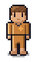
Madenci, Ambar'a çalışır. Madencilik bir seferdir: Heron'da madencilik mekiğiyle uzaya, yaklaşık 60 x 40 karelik havasız bir kaya sahasına çıkılır; Millrace'te Maden Denizaltısı'yla deniz tabanına inilir ve cevher getirilir.
Şunlarla başlarsın
- Ellerinde:
 El matkabı
El matkabı - Kemer:
 Madenci kemeri içinde
Madenci kemeri içinde  Cevher çantası
Cevher çantası  Bandaj
Bandaj  Epinefrin kalemi
Epinefrin kalemi - Sırt çantası: Sırt çantası içinde Hava tankı
- Ayaklar: Çizmeler yerçekimi olan bir istasyonda (Millrace, Cairn); ağırlıksız Heron'da çıplak ayak ya da çorap.
- Ceplerinde: El feneri
Erişim
Kart erişimi: ambar, bakım. Başladığı yer: Maden Rıhtımı. Kimlik kartı şunları açar: Ambar Tezgâhı (ambar), Ambar Bölmesi (ambar), Maden Rıhtımı (ambar), Bakım Deposu (bakım), EVA Hava Kilidi 2 (bakım), servis geçitleri ve her herkese açık oda.
Ne yaparsın
- Maden Rıhtımı'nın rafından bir kıyafet, kask ve tüp tak ve madencilik mekiğine bin (rıhtımdaki konsoldan çağır; kabinde Otur'a dokun ve madene gönder). Yolculuk birkaç saniye sürer.
- Cevheri damarlardan, Madenci kemerinin kancasındaki cevher torbasına kaz: her biri yalnızca iki ya da üç kazı alır ve hiçbiri yeniden büyümez; zengin olanlar iniş alanından uzaktadır.
- Tüpü kabindeki dolduruculuktan doldur (yolculuk başına altı dolum), mekiği iniş alanındaki konsoldan eve çağır, sonra rafineride hunisini yükle ve ergit: demir cevherinden plaka, bakır cevherinden bakır çubuk, ikisi de bir kristalden.
- Millrace'te Maden Rıhtımı'nın rafından bir dalış giysisi ve bir tüp al ve Maden Denizaltısı'yla deniz tabanı sahasına in.
- Plakaları İstasyon Mühendisi'ne ver.
- İki kat hızlı: asteroitten cevher kaz ve cevher eritme.
Birlikte çalıştığı
Ambar Görevlisi ve İstasyon Mühendisi.
İpuçları
- Sahada hava da halat da yok: Heron'da bir tüp beş dakika dayanır (Millrace'te dalış giysisiyle sekiz), bu yüzden kapı açılmadan önce kontrol et.
- Sahada mekik, biri kabinine adım attıktan 20 sn sonra, kayışlıları alarak kalkar: panel saniyeleri kırmızıyla sayar.


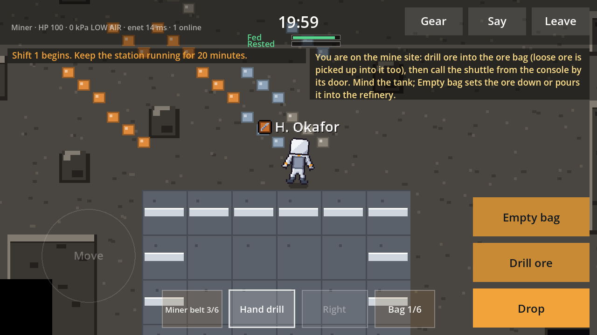
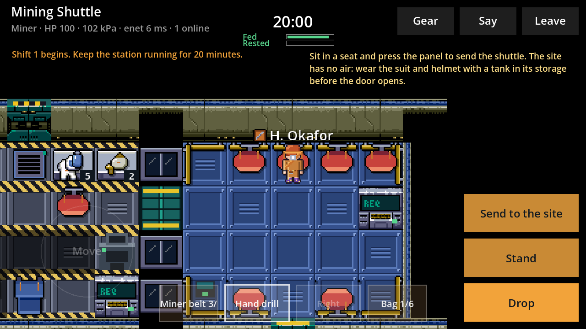


Bakım Görevlisi 
Bakım Görevlisi istasyonu temiz ve aydınlık tutar. Yerçekimi olan yerde dökülenler insanları kaydırır ve karanlık odalar sorunu gizler.
Şunlarla başlarsın
- Ellerinde: hiçbir şey
- Kemer:
 Bakım Görevlisi kemeri içinde
Bakım Görevlisi kemeri içinde  Paspas
Paspas  Kova (boş)
Kova (boş)  Ampul kutusu
Ampul kutusu  Islak zemin tabelası Islak zemin tabelası
Islak zemin tabelası Islak zemin tabelası - Sırt çantası: Sırt çantası içinde
 Sıyırıcı
Sıyırıcı - Ayaklar: Çizmeler yerçekimi olan bir istasyonda (Millrace, Cairn); ağırlıksız Heron'da çıplak ayak ya da çorap.
- Ceplerinde: El feneri
Erişim
Kart erişimi: bakım. Başladığı yer: Bakım Deposu. Kimlik kartı şunları açar: Bakım Deposu (bakım), EVA Hava Kilidi 2 (bakım), servis geçitleri ve her herkese açık oda.
Ne yaparsın
- Su birikintilerini paspasla (önce kovayı bir lavaboda doldur); aletler Bakım Görevlisi kemerinde asılıdır.
- Su birikintisinin olduğu yere ıslak zemin tabelası koy (yalnızca yerçekimi olan istasyonlarda: ağırlıksız Heron'da kimse kaymaz).
- Odaların lambalarında yanan ampulleri değiştir.
- Atık hattının tıkanmış borularını pompayla aç.
- Dolaşmak için servis geçitlerini kullan.
- Cairn'de: Hava Kilitlerindeki paspasları boşalt, içeri taşınan karın yaptığı su birikintilerini paspasla ve kızağın geçebilmesi için avlunun kızak yolundaki yığınları kürekle.
- İki kat hızlı: bir kova doldur, bir birikinti sil ve ampulü değiştir.
Birlikte çalıştığı
İstasyon Mühendisi (sızıntılar, çatlak duvarlar), Ambar Görevlisi (kızak yolu) ve kayan herkes.
İpuçları
- Paspas ve ampul işleri yarı sürer: yoldan geçerken yap.
- Sızdıran çatlak bir duvar yeni bir su birikintisi yapar: mühendise haber ver.
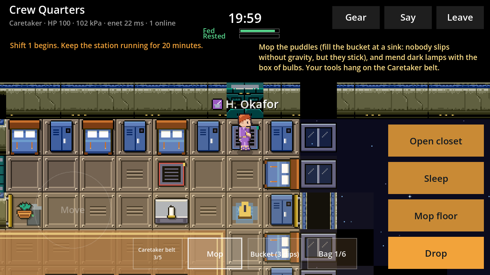


Manevi Danışman
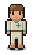
Manevi Danışman, Şapel'de ekibin moralini gözetir. Bir kutsama ya da ayin, insanları Teselli edilmiş bırakır; acıkma ve yorulma biraz daha yavaş gelir.
Şunlarla başlarsın
- Ellerinde: hiçbir şey
- Sırt çantası: Sırt çantası içinde
 İlahi kitabı
İlahi kitabı 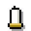
Mum Mum - Ayaklar: Ayakkabılar yerçekimi olan bir istasyonda (Millrace, Cairn); ağırlıksız Heron'da çıplak ayak ya da çorap.
- Ceplerinde: Kalem
Erişim
Kart erişimi: herkese açık odalar dışında yok. Başladığı yer: Şapel. Kimlik kartı şunları açar: her herkese açık oda.
Ne yaparsın
- Yaralı olsun olmasın birinin yanında Teselli et'e ya da kendin için Dua et'e dokun: kutsanan birkaç dakika Teselli edilir (yaralıysa ya da yerdeyse daha uzun).
- Şapelin sunağındaki mumları yak, ilahi kitabını tut ve Ayin yap'a dokun: Şapel'deki herkes Teselli edilir (iki mum yanıyorsa daha uzun).
- Doktorlar çalışırken yaralıların yanında otur ve Şapel'i herkese açık tut.
Birlikte çalıştığı
Doktor (yaralılar) ve tüm ekip.
İpuçları
- Her 15 saniyede bir kutsama, her 3 dakikada bir ayin yapılabilir: acele etmeye gerek yok.
- Şapel, Heron'da merkezin yanında, Millrace'te Rıhtım'dadır.

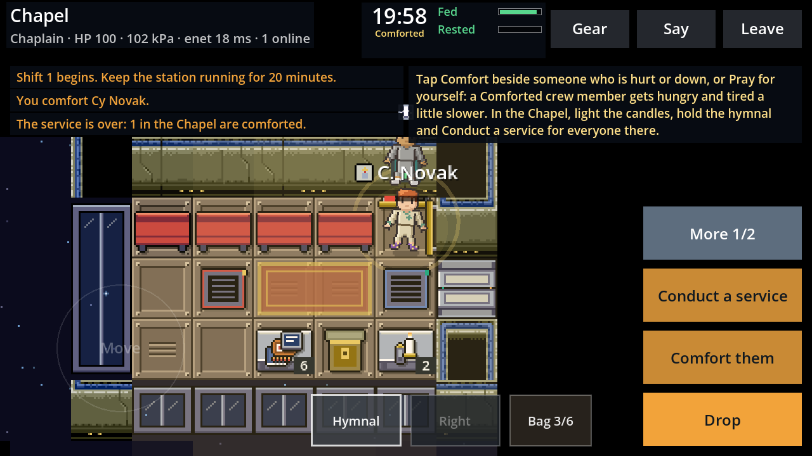
Tayfa 
Tayfa, istasyonun yardımcısıdır ve yeni bir oyuncunun başladığı meslektir. Alabilecek kişi sayısında sınır yoktur ve kart hiçbir bölüm kapısını açmaz.
Şunlarla başlarsın
- Ellerinde: hiçbir şey
- Sırt çantası: Sırt çantası
- Ayaklar: Ayakkabılar yerçekimi olan bir istasyonda (Millrace, Cairn); ağırlıksız Heron'da çıplak ayak ya da çorap.
- Ceplerinde: El feneri
Erişim
Kart erişimi: bar. Başladığı yer: Mürettebat Yatakhanesi. Kimlik kartı şunları açar: her herkese açık oda.
Ne yaparsın
- Elleri kısıtlı hangi bölüm varsa ona yardım et: Ambar için sandık taşı, Bakım Görevlisi için kovayı tut, yaralıları Revir'e götür.
- Tezgâhtan kendine ve başkalarına servis yap, barda otur.
- İstasyonu, kartın açtığı her odayı deneyerek öğren: koridor, kantinin tezgâhı, bar, tuvaletler, şapel ve varış alanı.
- Ne yapmak istediğini bildiğinde Sicil Memuru ile bir meslek değişimi konuş.
Birlikte çalıştığı
Her bölüm ve kartı değiştirebilen Sicil Memuru.
İpuçları
- Yararlı olmak için kimsenin bir mesleğe ihtiyacı yok: telsizden ne gerektiğini sor.
- Fenerin cebinde: karanlık tünelleri aydınlatmak için dokun.

Her kimlik kartının açtığı herkese açık odalar: Merkez Salon, Bar, Kuzey Geçiş Tüpü, Doğu Geçiş Tüpü, Güney Geçiş Tüpü, Batı Geçiş Tüpü, Bilim Geçiş Tüpü, Nöbet Geçiş Tüpü, Güç Geçiş Tüpü, Yatakhane Geçiş Tüpü, Revir Kabulü, Savunma Odası, Ambar Girişi, Ana Hava Kilidi ve Yanaşma Kapısı, Mühendislik Holü, Mürettebat Yatakhanesi, Tuvalet, Kütüphane, Şapel, Mürettebat Mekiği.